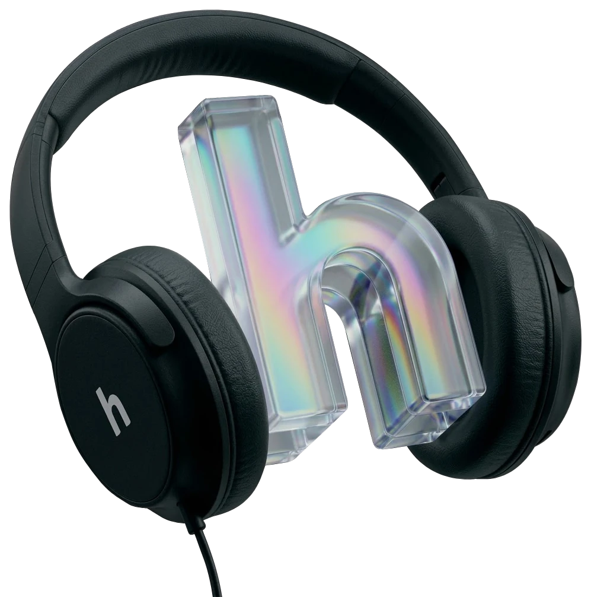

Tire o ruído.Mantenha a voz.
A IA do Harken reconhece a obra do vizinho, o trânsito na janela, o latido no quintal, e remove só esses ruídos das suas chamadas de vídeo, em tempo real.

Do ambiente para a sua chamada
filtrando
Treinado para o barulho do dia a dia.
Cada categoria é um modelo que o Harken reconhece e silencia sob demanda, sem mexer na sua voz.
Obra
80–400 Hz
Trânsito
100–600 Hz
Latido
500–2k Hz
Buzina
400–3k Hz
Sirene
600–4k Hz
Multidão
200–2k Hz
Ficha técnica conceitual
| Bateria | 36 horas com a IA ligada |
|---|---|
| Conexão | Bluetooth 5.3 e USB-C |
| Microfones | 6, com captação do ambiente |
| App companion | Windows e macOS |
| Chamadas | Zoom, Meet e Teams |
| Peso | 290 gramas |
Números ilustrativos de uma peça de portfólio, não medições reais.
Deixe o mundo lá fora.
Sem cobrança. É um protótipo de portfólio.